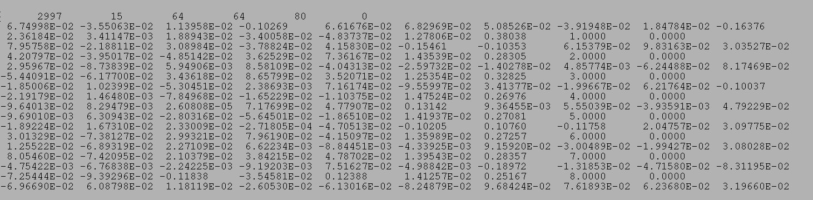
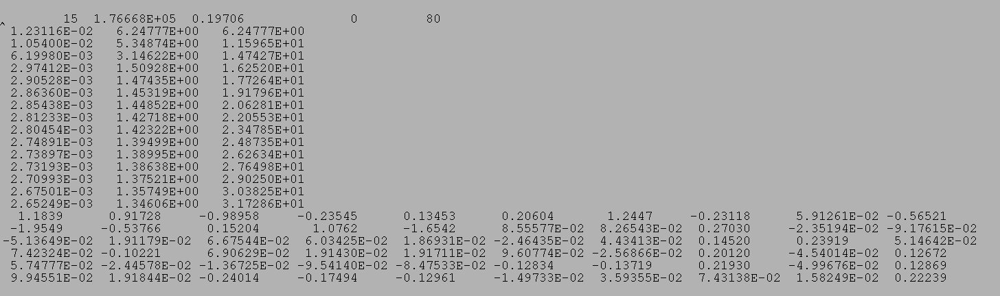

| .OPERATION: | CA S | ; Analyze using CORAN |
| .IMAGE FILE TEMPLATE: | sav_face_stk@* | ; Image file template (input) |
| .FILE NUMBERS OR SELECTION DOC. FILE NAME: | 1-80 | ; Numbers of image files |
| .MASK FILE: | sav_face_mask | ; Mask input file (input) |
| .NUMBER OF FACTORS: | 15 | ; Number of factores |
| .CORAN, PCA, ITERATIVE PCA, OR SKIP ANALYSIS (C/P/I/S): | C | ; Use CORAN |
| .ADDITIVE CONSTANT: | 0.00 | ; Additive constant |
| .OUTPUT FILE PREFIX: | ca_s_c | ; CA file prefix (output) |
| INPUT FILE IMAGES (Montage) |
|---|
 |
| sma*** |
| MASK INPUT FILE |
|---|
| sav_face_mask |
| OUTPUT TEXT FILE (Truncated) |
|---|
 |
| cas_c_IMC |
| OUTPUT TEXT FILE (Truncated) |
|---|
|  |
| cas_c_PIX |
| OUTPUT EIGENVALUE TEXT FILE (Truncated) |
|---|
|  |
| cas_c_EIG |
| OUTPUT FILES FOR INTERNAL USE | ||
|---|---|---|
| IMAGE FILE: | ca_s_c_MAS | SPIDER image mask file. Usually just a copy of the input mask file. Used internally within 'CA' & 'CL' operations. |
| BINARY FILE: | ca_s_c_SEQ | Binary file that stores all image pixel values within the mask from all the images. NOT a SPIDER image. Only used internally within other 'CA' & 'CL' operations. |
| BINARY FILE: | ca_s_c_SET | Binary file with transposed data. NOT a SPIDER image. Only used internally within other 'CA' & 'CL' operations. |